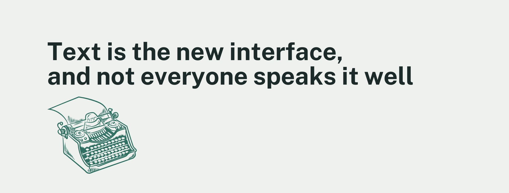
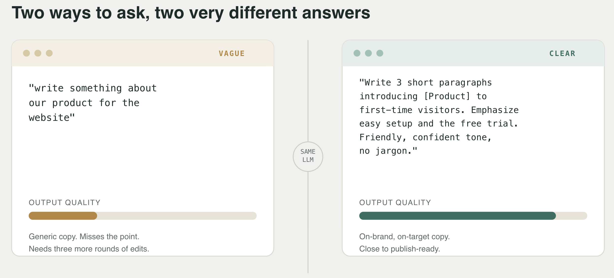

For most of computing history, the interface stood between you and the machine, and good UX meant designing that interface so a user's skill level stopped mattering much. LLMs quietly broke that deal. The interface is now a text box, and "prompt engineering" is mostly just writing well: knowing what you want, saying it clearly, structuring it so someone (or something) can follow your logic, etc. In other words, literacy, in the plain sense of being proficient in reading and writing a language: a decent vocabulary, a feel for sentence structure, the ability to organize ideas logically, comprehension sharp enough to respond well to what you read. That's different from "AI literacy" (knowing how to use AI tools) or "digital literacy" (general comfort with digital platforms), and you can have one without the other.
The way you phrase a prompt changes what you get back, and this has been tested directly, not just assumed. A study on AI literacy and prompt engineering found that people's prompt-writing skill directly predicted how good the model's output was. Even better news: A separate study working with journalists found that prompt engineering can be taught. Give people focused training in how to write prompts, and their results get measurably better. This is a skill you can build, not a talent you're stuck with. Even small stylistic touches carry weight: research on prompt politeness and phrasing across languages found that these choices shift how well models perform, which is a nice way of saying the model treats you like a writer, not just someone pushing buttons.
So here's the fun part: if prompting is really just writing, then the everyday skills that make someone a strong writer, a rich vocabulary, a feel for structuring ideas, comfort with more complex sentences, should carry straight over and make them a strong prompter too. A review pulling together research on prompting and academic writing found exactly this kind of pattern in the classroom: students who wrote better prompts also showed stronger engagement, sharper critical thinking, and better writing overall. The researchers behind it describe prompt skill as combining three things at once: comfort with digital tools, general writing ability, and a sense for how to make an argument land. In other words, the better communicator you already are, the more you tend to get out of these tools.

Here's where it gets interesting: if strong literacy leads to strong prompting, and strong prompting leads to getting more value out of AI, then these tools reward the people who are already good communicators the most. A study on AI use in higher education found precisely that: students who were already strong academically got noticeably more value out of AI tools than students who were still building those skills, even though everyone had access to the exact same technology. Access alone was never the whole story but knowing how to use it well is what actually determines what you get out of it.
There's a genuinely interesting twist here too: the people most likely to lean on an LLM to do their writing for them are often the ones who'd benefit most from practicing writing themselves. An MIT Media Lab study using EEG tracked people writing essays with an LLM, with a search engine, or with no tool at all, across several sessions. People who relied on the LLM showed weaker brain connectivity while writing, felt less ownership over what they'd produced, and had a harder time recalling their own essays afterward, with some of these effects lingering even after they stopped using the tool.
Put those two findings side by side and something clicks: prompt skill seems to grow out of general writing ability, and writing ability grows through practice. Which means that the people who keep writing on their own, rather than outsourcing it, may end up being the ones who communicate best with these tools down the line.
Prompt engineering was never really a new skill, it's an old one, writing, wearing a new interface, which means the thing worth protecting isn't AI literacy workshops or clever prompt templates but the more basic skill underneath them: reading carefully, writing clearly, structuring ideas well. The timing is unfortunate, since many education systems are already struggling with literacy outcomes just as literacy is becoming more valuable, not less, so the real question is not how to get better at prompting, but whether you're still becoming a better writer at all.